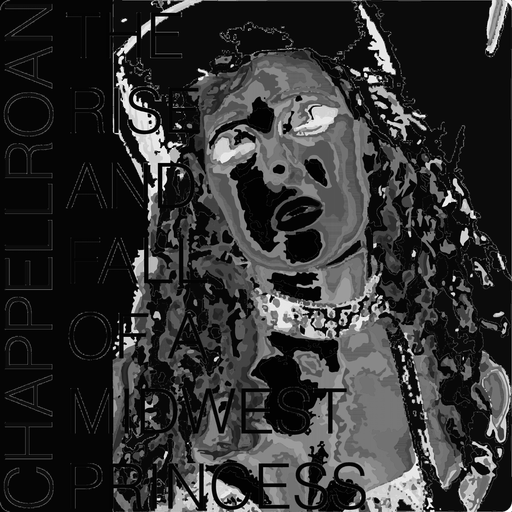
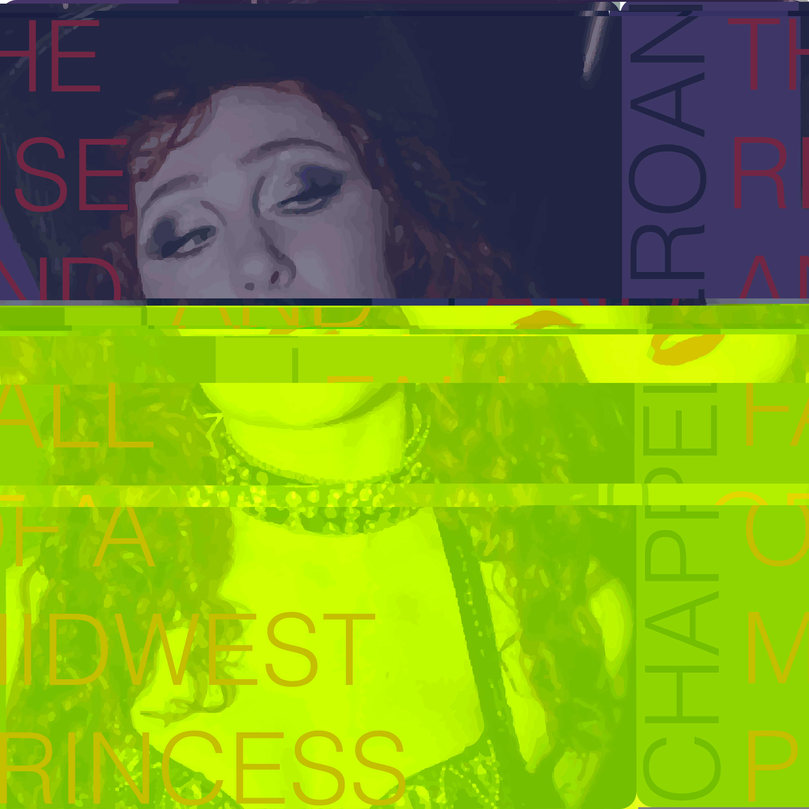
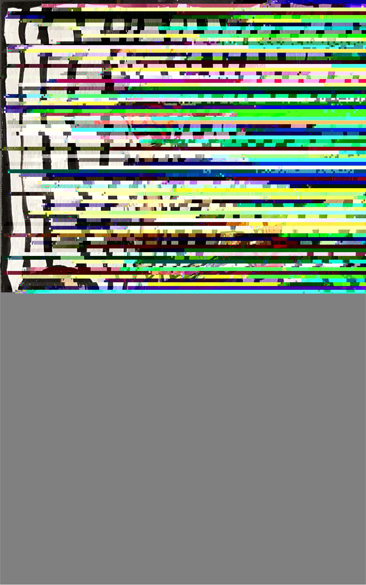

Chappell



The three images are connected because two of them use the same original image, while the third shows a different image being altered through the same glitch process, while being a completely different aesthetic. I used Audacity and TextEdit to create the glitches. Most of the process was based on trial and error. I experimented with different effects and kept the ones that created interesting results. I really enjoyed cutting parts of the "audio" and putting them somewhere else. The glitching takes these images that were originally well put together and makes them messier and more chaotic. This connects to my own struggles with the glitch art process, since the final images show how mistakes and unexpected results can become part of the artwork.